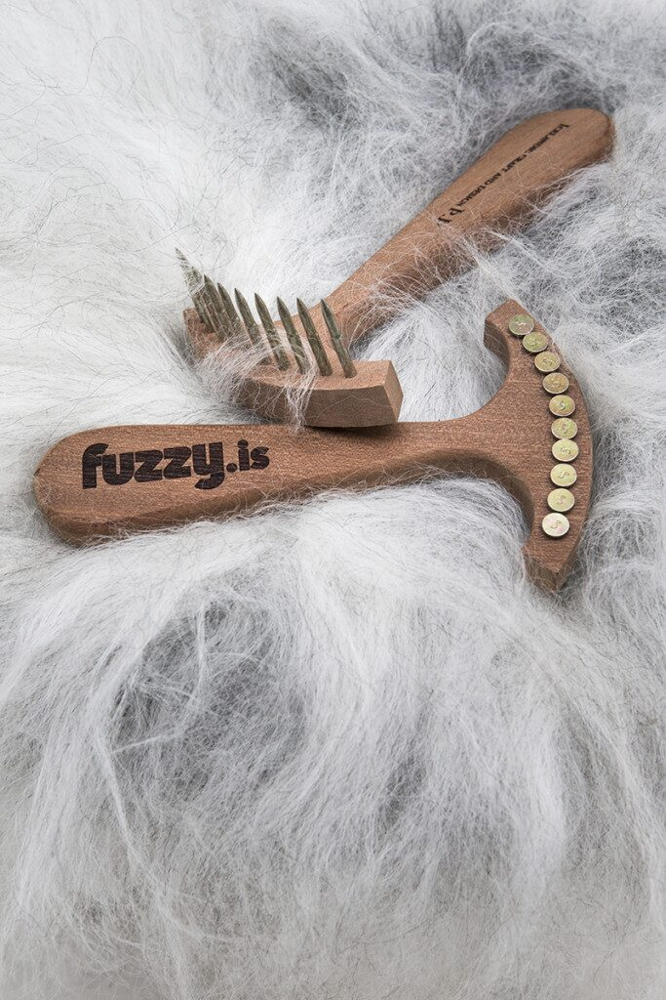

Fuzzy kambur, 2015
Kambur í líki gamallar hrífu
Handfangið á kambinum er í sömu útfærslu og fæturnir á stólnum, sem er vatnsdropi, en hausinn er í líkingu við gamla hrífu. Svo allir geti notið þess að horfa á Fuzzy eins og þeir fengu hann í upphafi, vel greiddan og fallegan.
Sigurður greiðir Fuzzy